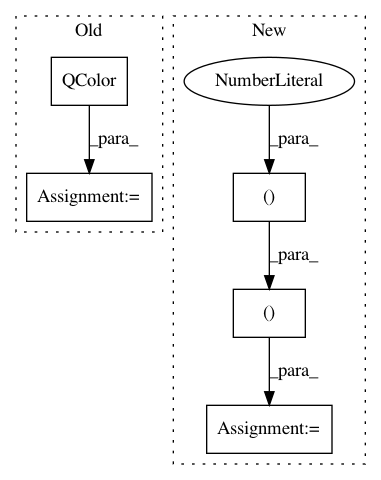

4b803479322219967f7daa836e9db02dce0b65d1,Orange/widgets/gui.py,AttributeIconDict,__getitem__,#AttributeIconDict#Any#,556
Before Change
VarTypes = Variable.VarTypes
self[VarTypes.Continuous] = \
createAttributePixmap("C", QColor(202,0,32))
self[VarTypes.Discrete] = \
createAttributePixmap("D", QColor(26,150,65))
self[VarTypes.String] = createAttributePixmap("S", Qt.black)
self[-1] = createAttributePixmap("?", QColor(128, 128, 128))
if isinstance(key, Variable):
key = key.var_type
After Change
from Orange.data import Variable
if not self:
VarTypes = Variable.VarTypes
for key, char, col in ((VarTypes.Continuous, "C", (202, 0, 32)),
(VarTypes.Discrete, "D", (26, 150, 65)),
(VarTypes.String, "S", (0, 0, 0)),
(-1, "?", (128, 128, 128))):
self[key] = createAttributePixmap(char, QtGui.QColor(*col))
if isinstance(key, Variable):
key = key.var_type
if not key in self:
key = -1
In pattern: SUPERPATTERN
Frequency: 3
Non-data size: 5
Instances
Project Name: biolab/orange3
Commit Name: 4b803479322219967f7daa836e9db02dce0b65d1
Time: 2013-07-20
Author: janez.demsar@fri.uni-lj.si
File Name: Orange/widgets/gui.py
Class Name: AttributeIconDict
Method Name: __getitem__
Project Name: biolab/orange3
Commit Name: 69a472517120ffee300a967b2fe9b3bc05f5cf4b
Time: 2015-06-23
Author: ales.erjavec@fri.uni-lj.si
File Name: Orange/widgets/unsupervised/owmds.py
Class Name: OWMDS
Method Name: _setup_plot
Project Name: biolab/orange3
Commit Name: 5b58ab5c45be8923e5d74e3bc84101be1ad13066
Time: 2017-08-21
Author: ales.erjavec@fri.uni-lj.si
File Name: Orange/widgets/unsupervised/owmds.py
Class Name: OWMDS
Method Name: _setup_plot